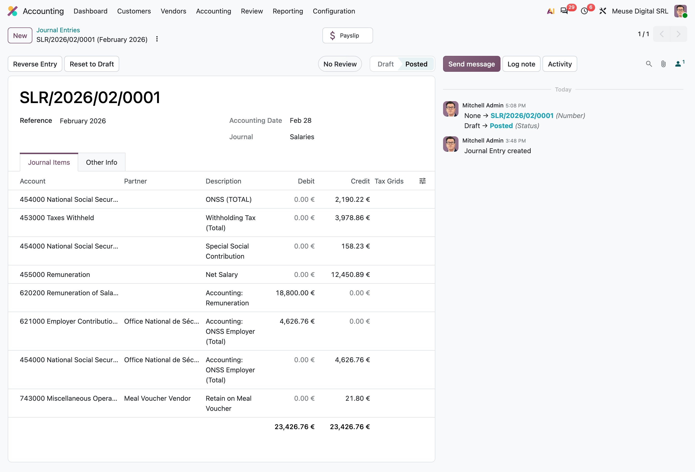
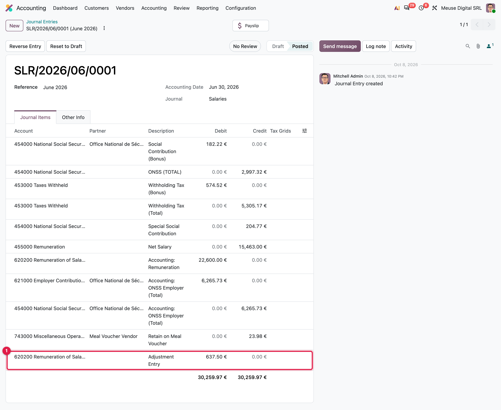
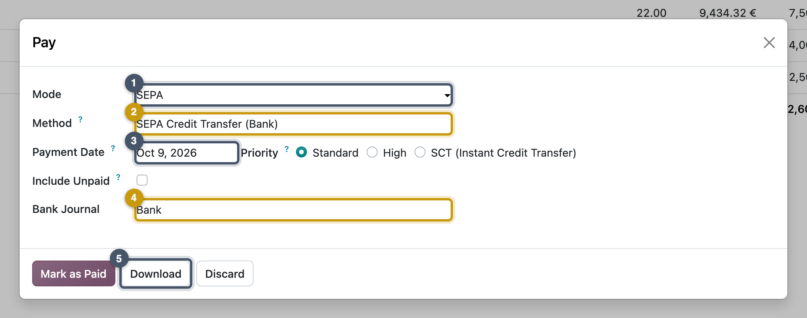

Accounting and payment
From payslip lines to one balanced entry, then to a bank file
- Explain how validated payslips become a journal entry, and which settings shape it
- Read a real payroll entry line by line and check that it balances
- Use the Adjustment Entry line as a configuration smoke test
- Pay a pay run with a SEPA file, and know what Paid does and does not mean in accounting
Chapter 8 drew a payroll month as T-accounts on paper. Here Odoo does it: the structure and its rules hold the configuration, Validate triggers the entry, and a bank file pays the net.
From payslip to bank
Validating the payslips is not the end of the month. Two things still have to happen in the real world, and Odoo handles both:
- Book it. The company records in its accounts what the month cost and what it now owes, and to whom: the employees, the social security office, the tax office. That record is a journal entry.
- Pay it. The company sends the money. For the employees' net pay, Odoo produces a bank file the bank executes in one go.
What you configure
Four settings decide what the journal entry looks like. They are easiest to understand on the result, a simplified version of MyVidangeCompany's February entry:
| 2Account | 3Partner | Debit | Credit |
|---|---|---|---|
| 620200 Remuneration | 18,800.00 | ||
| 621000 Employer contributions | 4,626.76 | ||
| 454000 Social security office | the social security office | 6,975.21 | |
| 453000 Taxes withheld | the tax office | 3,978.86 | |
| 455000 Remuneration owed | 12,450.89 | ||
| … |
- The journal is the book the entry is written in; payroll has its own, Salaries. You set it on the structure. A structure without a journal produces no entry at all, and no error.
- The accounts are the lines of the company's chart of accounts: an expense (Remuneration) or a debt (Social security office). Each salary rule says which account its amount goes to: a debit account for what the company spends, a credit account for what it owes.
- The partner says to whom a debt is owed. It is also set on the rule.
- One entry per run, or one per payslip. The company setting Anonymize Journal Entries (Chapter 12) groups the whole run into one entry, so individual salaries cannot be read in the books.
With the Belgian chart of accounts, the localization fills all four for you: the Salaries journal, the rule accounts and the anonymized entries.
When the entry is created
The entry is created the moment the run is validated, in four steps:
Step 3 matters most: Odoo never refuses an unbalanced entry, it quietly balances it. The next section shows why that line is a warning sign.
Reading February's entry

| Account | Label | Debit (€) | Credit (€) |
|---|---|---|---|
| 620200 Remuneration | Remuneration | 18,800.00 | |
| 621000 Employer contributions | Employer social security | 4,626.76 | |
| 454000 Social security office | Employee social security | 2,190.22 | |
| 454000 Social security office | Special social security contribution | 158.23 | |
| 454000 Social security office | Employer social security | 4,626.76 | |
| 453000 Taxes withheld | Withholding tax | 3,978.86 | |
| 455000 Remuneration | Net salary | 12,450.89 | |
| 743000 Miscellaneous income | Retain on meal voucher | 21.80 | |
| Total | 23,426.76 | 23,426.76 |
The company spends 18,800.00 € of salaries and 4,626.76 € of employer contributions, and owes it to the social security office (6,975.21 €), the tax office (3,978.86 €) and the employees (12,450.89 €). Employer contributions appear on both sides because their rule carries two accounts, an expense and a liability: that is how Odoo books costs that never touch net pay.
Key idea: the Adjustment Entry line is a smoke test
If a rule has no account, or one side where two are needed, debits and credits differ. Odoo does not refuse the entry: it adds an Adjustment Entry line on the journal's default account, and the books look right while being wrong. After the first month, open the entry: an Adjustment Entry means a missing or doubled account.

Common pitfall: rules activated after the chart of accounts
Rules installed archived (Belgium, until the joint committee is chosen) get no accounts if the chart was loaded first, and the first entry shows a large Adjustment Entry. Reload the chart's payroll accounts (Chapter 22); do not type them rule by rule.
Corrections book too: the refund of Mission 15.2 posts the reverse of the original, the correction posts the corrected amounts. Cancelling a payslip deletes or reverses its entry.
Paying
Validated run net owed on 455000 → Payment wizard: CSV or SEPA file → Mark as Paid: payslips Paid, paid date set → Register a payment on the 455000 lines → reconciled: payslips Paid when nothing is left
The run's Pay button opens the payment wizard. With the SEPA module (Mission 12.3) it builds an ISO 20022 credit-transfer file from each payslip's net and the employee's trusted bank account, with the category purpose SALA (salary payment). An employee with several payslips in a run gets one summed transfer.

Common pitfall: Paid is not booked
Mark as Paid changes the payslips' state; it creates no payment and posts nothing. After paying February, account 455000 still owes 12,450.89 € until the bank statement is reconciled. The payslip state is a payroll status; 455000 is the accounting truth.
Around the world
- Euro countries: SEPA credit transfer files.
- Switzerland: the Swiss ISO 20022 variant.
- UAE, Saudi Arabia, Oman: WPS files (the Wage Protection System that proves salaries were paid).
- United States: NACHA files through batch payments.
- Everywhere: the generic CSV export.
In practice: close the month in this order
- Validate the run. 2. Check the entry (no Adjustment Entry). 3. Post it. 4. Generate and send the bank file. 5. Mark as paid. 6. When the bank statement arrives, reconcile the salary transfers with 455000, and the social security and tax payments with 454000 and 453000.
Missions
Mission 16.1 · Read and post January ★
Situation. The accountant asks for January's payroll entries, including the correction of Mission 15.2.
Your goal. Find every January payroll entry, check that none has an adjustment line, and post them.
Check. Three posted entries in Salaries dated 31/01/2026: the run (23,264.01 €), the refund (5,032.00 €) and the correction (4,799.77 €). No Adjustment Entry line.
Hint
A payslip's Journal Entry smart button opens its entry; the journal's list can be filtered by date.
Mission 16.2 · Pay February by SEPA ★★
Situation. MyVidangeCompany's bank account is BE77 0014 5678 9042 (BIC GEBABEBB). February's salaries leave by transfer.
Your goal. Produce the SEPA file of the February run and mark the run as paid.
Check. The file holds 4 transactions, control sum 12,450.89 €, category purpose SALA; the February run is Paid.
Hint
The first attempt fails with a clear message: read it. The IBAN belongs on the Bank journal.
Mission 16.3 · Paid is not booked ★★
Situation. End of May: every run from January to May is validated, only February is paid. The accountant asks: "How much net pay do we still owe our employees?"
Your goal. Post the entries of February to May and read the balance of the net-pay account.
Check. February's entry totals 23,360.94 €; account 455000 shows a credit balance of 68,910.13 €: every net since January, February included, because no bank statement has been reconciled.
Hint
Select several draft entries in the Salaries journal and post them at once; the general ledger gives the balance.
Mission 16.4 · The adjustment line of June ★★★
Situation. June's run (run it now, as in Chapter 15) pays the annual sectoral bonus (SECTORIAL.BONUS) to the CP 200 employees. The accountant finds an Adjustment Entry line in June's entry and asks why.
Your goal. Run, validate and post June, then explain the adjustment line from the payslip lines and the rules' accounts.
Check. An Adjustment Entry debit of 637.50 € on 620200 = the sectoral bonuses (1,394.24 €, booked by no rule) minus the bonus social security (182.22 €) and withholding (574.52 €), booked a second time as debits on 454000 and 453000. Those liabilities are understated by 756.74 € in total.
Hint
Show all on a June payslip, list the lines whose code contains BONUS, and open those rules' Accounting tab: are their amounts already in ONSSTOTAL and PPTOTAL?
Summary
- A validated payslip creates accounting only if its structure has a salary journal; the rules' accounts decide the lines.
- With Anonymize Journal Entries (Belgium's default), a run gives one entry per journal and month, dated at month end, in draft.
- February's entry: 18,800.00 € salaries + 4,626.76 € employer contributions = 23,426.76 €, owed to social security, the tax office and the employees.
- Rules with two accounts book employer costs without touching net; an Adjustment Entry line means a missing or doubled account.
- The Pay wizard produces the bank file and marks payslips paid; it does not reconcile anything. The net-pay account clears only when the bank statement is reconciled.